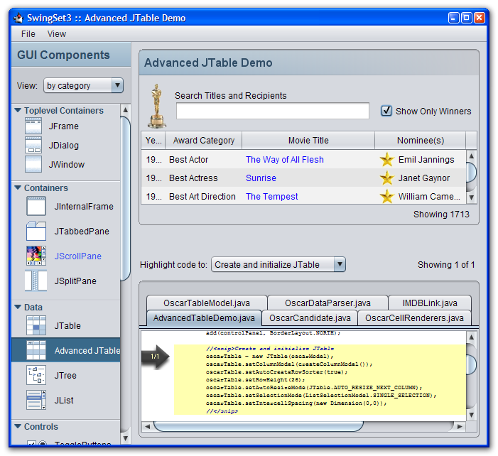

Nimbus es un aspecto pulido y multiplataforma presentado en la Actualización 10 de Java SE 6 (6u10). La siguiente captura de pantalla, de SwingSet3 muestra el aspecto Nimbus.

Nimbus usa gráficos vectoriales de Java 2D para dibujar el interfaz de usuario (IU, UI en inglés), en vez de bitmaps estáticos, de forma que el IU puede representarse de forma nítidad en cualquier resolución.
Nimbus es muy personalizable. Puede usar el aspecto Nimbus como tal, o puede skin (personalizar) la apariencia con su propia marca.
Por compatibilidad con versiones anteriores, Metal es aún el aspecto por defecto de Swing, pero puede cambiar a Nimbus de una de tres maneras:
import javax.swing.UIManager.*;
try {
for (LookAndFeelInfo info : UIManager.getInstalledLookAndFeels()) {
if ("Nimbus".equals(info.getName())) {
UIManager.setLookAndFeel(info.getClassName());
break;
}
}
} catch (Exception e) {
// Si Nimbus no está disponible, puede asignar al IGU otro aspecto.
}
La primera línea de código recupera la lista de todos las implementaciones de aspectos instaladas en la plataforma y después itera a través de la lista para determinar si Nimbus está disponible. Si es así, Nimbus es establecido como el aspecto a usar.
UIManager.setLookAndFeel porque no todas las versión o implementaciones de Java SE
6 soportan Nimbus. Adicionalmente, la ubicación del paquete Nimbus cambió entre la Actualización 10 del
KDJ 6 y las versiones de KDJ 7. Iterar a través de todas las implementaciones es una aproximación más
robusta porque si Nimbus no está disponible, se usa el aspecto por defecto. Para la Actualización 10 del
KDJ 6, el paquete Nimbus está ubicado en com.sun.java.swing.plaf.nimbus.NimbusLookAndFeel.
java -Dswing.defaultlaf=javax.swing.plaf.nimbus.NimbusLookAndFeel MyApp
<JAVA_HOME>/lib/swing.properties:
swing.defaultlaf=javax.swing.plaf.nimbus.NimbusLookAndFeel
swing.properties no existe aún, necesita crearlo.